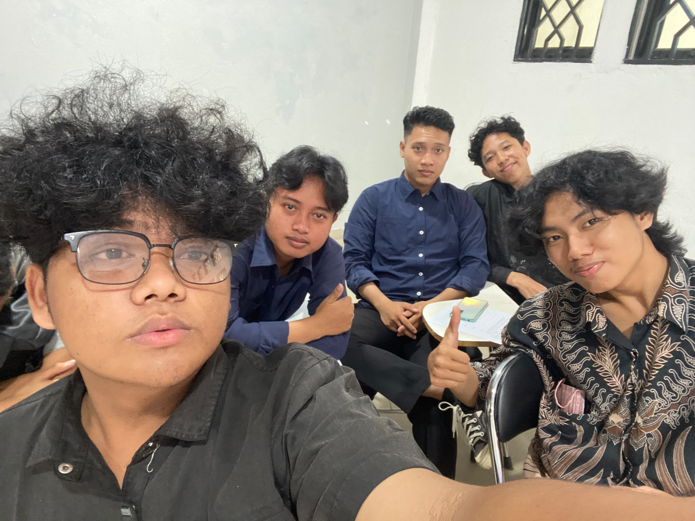
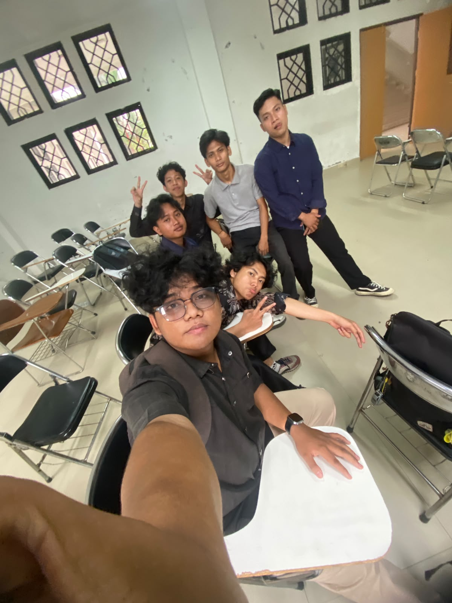

HELLO,I'M YOGA.
Saya Yoga Pangestu, mahasiswa Sistem Informasi angkatan 2025 di UIN SUSKA. Saya tertarik mempelajari desain UI/UX, game, dan berbagai hal baru di bidang teknologi.
Sekilas tentang saya
- NAMA
- Yoga Pangestu Winardi
- KAMPUS
- UIN SUSKA RIAU
- JURUSAN
- Sistem Informasi
- ANGKATAN
- 2025
Yang saya tekuni
- SEMUA YANG SEDANG SAYA JALANI
Foto & kegiatan

Foto profil Yoga
images/profil-besar.jpg

JALANI TEKUNI AKHIRI
images/aktivitas.jpg
JALANI TEKUNI AKHIRI.